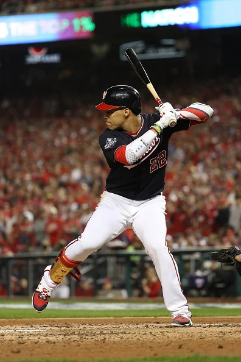

The Legend of Juan Soto: Inside the Mind of MLB’s Best Hitter
Genius may be most familiar under arc lights and with an audience, but it is here, in a batting cage an hour past sunup on a quiet March morning in West Palm Beach, Fla., where it has its foundry. With beautiful violence and the same 75-swing legato, Juan Soto starts every baseball day since he became a professional at 16 years old. There is no technology. No cameras. No Trackman. No accoutrements. It is just a bat, a bucket of baseballs, Nationals hitting coach Joe Dillon and, when it comes to master levels of power, patience and contact, the greatest hitting prodigy since Ted Williams. Soto, the Nationals’ right fielder, is 23 years old, the same age Frédéric Chopin, another prodigy, was when he published his first set of Études in 1833. An études is a batting drill for a pianist. It is a short work written as a teaching aid. But from the hand of Chopin, études elevate to concert repertory. So it is with the Études of Soto: Utilitarian practice becomes artistic masterwork.
Not once in his 75 swings off various types of flips from Dillon does Soto hit a ball off the top net. Most swings produce line drives toward left center, the favorite direction of his left-handed swing. In one sequence Soto doesn’t swing at the flips but knocks them straight down with the end of the bat knob. “I never want my bat to get away from my head,” he explains. “I want to feel it real close to my body. This reminds me to be quick to the ball and always work a little bit down to the ball.” The session ends with Dillon mixing the speed and location of the flips. From 15 feet away, Soto must decide whether the ball is a strike or not. He is never wrong with his swing decisions. He has been using the same training program since minor league hitting coaches Troy Gingrich and Jorge Mejia showed him on his first day at Instructional League camp in 2015. This session goes especially well. “My bat,” he says, “is flying right now.” What makes a hitting genius? The fundamentals of études, for one. Also, at 6’ 2”, 224 pounds, Soto is a physical marvel. With his strong glutes and thighs and wide stance, he is the Colossus of Rhodes in the batter’s box. Only an earthquake could topple him from his base. Such steadiness enhances his extraordinary vision. And if he decides to swing, Soto fires his powerful hips to unleash his quick, flat stroke.
There is another tool that makes Soto such an outlier: his mind. His ability to decode pitchers and the spin of a baseball is so unusual that Johnny DiPuglia, the Nationals scout who signed Soto, calls it “UFO stuff.” Soto has played 464 regular-season games. At that juncture, only Williams also had 90 homers and 350 walks—and their totals (Soto has 98 and 373; Williams 99 and 375) are eerily close. As with Williams, Soto stands apart because of how well he sees the baseball and the game.
One afternoon after a spring training workout, Soto explains in detail how the genius of his hitting mind works. The stories are so amazing that when he is done, even Soto realizes they sound so preposterous that he needs to add something. “I mean, people are going to think I’m lying through all this!” he says with a laugh. “They’re going to think it’s all lies. I hope they don’t. I don’t lie at all. It’s all true.” Indeed, the legend of Soto is all true. How DiPuglia signed him out of a urine-soaked batting cage occupied by a homeless man. How one muddy day in Class A ball Soto, with his shuffle, turned the mundane of taking a pitch into a signature move. But especially how he conquers some of the best pitchers by seeing the game on a higher level. “I don’t keep notes. It’s mostly in my head,” he says. “It can be a move, sometimes the way they throw a pitch, or the way they might miss with a pitch and go, Oh, that’s my fault. It can be any move they make that makes me go, That’s something.
“Justin Verlander. Game 6. World Series.” And we are off. Confessions of a hit man begin.
The antediluvian battle between pitcher and batter, in which one tries to keep the other from reaching base, is not a fair fight. Pitchers have won 65% to 69% of the time in every decade over the past hundred years. So sublime a hitter is Soto that he flips that century-old equilibrium. Soto seized the mathematical advantage over pitchers in the second half of last season. He won more than he lost. He became only the fourth player to post a .525 on-base percentage and hit 18 home runs in the second half of a season. The others: Babe Ruth, Williams and Barry Bonds.
“Do you know when you have a pitcher in trouble, when you’ve flipped the odds?” I ask him.
Soto says nothing. He smiles and nods mischievously.
“When does that happen?”
He smiles even more broadly.
“When you see the shuffle.”
The shuffle began, he says, to keep his spikes clean.
“I was in Low A,” he says. “It was a really bad day. It was raining and everything. All the mud was getting in the way. I just tried to clean it up and put my feet in the dirt and that’s when I started shuffling. Every pitch I took I just tried to clean it off, and pitchers started taking it personally. I was like, Are you taking this personally? Well, I’m going to keep doing it. If you get mad, I don’t care.
“Sometimes you try to find a way to get the pitcher out of his mind and try to get him out of his game. That’s when it started, and I kept doing it.”
He has since removed the crotch-grabbing part (“Yeah, I cleaned it up. I made it better.”), but the steely stare, the spread haunches and raised shoulders remain unmistakable kinesics. Soto is claiming territory. The territory is the approximately 3.3 square feet of the strike zone, and he is not going to be fooled into swinging at something outside that space. Last season nobody swung at fewer pitches out of the zone than Soto (12.2%).
“He is in total control of the at bat,” says former teammate Ryan Zimmerman. “These are the guys every sport needs—the five to 10 guys who are just so much better than everyone else. He’s one of those freaks.
Soto fell in love with baseball because of the Red Sox and their Dominican stars, Pedro Martínez, David Ortiz and Manny Ramírez. Young Juan would rip two sheets of paper from a notebook, crumple them into a ball, cover it with tape and act out by himself a Red Sox–Yankees game in a hallway of his house.
“I used to live in a tough hood [in Santo Domingo], and my mom didn’t let me go out that often so I had to find a way to have fun,” he says. “I used to throw the ball in the air and just hammer it up the middle and run around the bases, back and forth in the hallway. And I remember thinking that was everything.”
Soto was invited to play in Dominican Prospect League games at Fort Lauderdale Stadium in 2015. DiPuglia already had Soto on his radar.
“First at bat, he hits a line drive off the wall in left center,” DiPuglia says. “Second at bat, he takes a slider in and hits it off the wall in right center.”
DiPuglia left his seat and approached Soto’s manager. “Let me have him for a little while,” he said. DiPuglia brought him to a decrepit batting tunnel where years ago Yankees greats such as Dave Winfield and Don Mattingly hit when the site was the team’s spring training home.
“There was a homeless guy in there,” DiPuglia says. “I gave him 20 bucks to get out. It stunk like urine. It was nasty. It was the only way I could get him alone for my final report. We started doing flips, just to reinforce his barrel awareness and how he adjusts his hands to different parts of the zone.”
Hearing the loud sounds of contact, two scouts for the Diamondbacks scrambled to see who was swinging the bat. They arrived to see DiPuglia shaking hands with Soto and his agent, Cristian “Niche” Batista, on a $1.5 million bonus.
“He hit the ball foul pole to foul pole without trying to hit every ball out the way most kids do,” DiPuglia says. “His eyes are ridiculous. You could tell he had good eyes by the way the ball hit his barrel. A lot of guys, you pick up their bat and you see ball marks up and down the bat. This guy wore out the barrel. It was unbelievable.”
Soto drew 145 walks last season at age 22. Only one hitter that young had such a keen eye: Williams, who walked 147 times at 22 in 1941, the year he hit .406.
Time is the currency of hitting. The sooner a hitter reads the pitch the more time he has to operate the radar defense system in his head: Identify the object, calculate its speed and trajectory and, if all adds up, smash it to smithereens. Soto’s vision buys him time. Sometimes he can read a pitch before it leaves the pitcher’s hand.
“I try to see the hand of the pitcher,” he says, then makes a circle with his thumb and index finger, the traditional changeup grip. “I can see this a lot while the ball is in his hand. Then you know, changeup. I can’t see the curveball grip, but every time I see it pop up out of the hand, I definitely can see that.
“I can’t tell if it’s a sinker or a cutter, but with the spin on the way [to the plate], you definitely know where the ball is going to land. With sliders, I can see the dot on the ball. Definitely. But not all of them have a dot. Most of them have just a big circle. You’ve got to see the fastball and the slider. Then I go, O.K., the fastball does this; the slider does that.”
The key to operating this decoding system is the steadiness of his base. Think of his eyes as a high-def camera and the legs as its stand. By remaining so still and balanced, Soto captures the baseball in remarkable clarity. Cameras that move blur the image.
“For your eyes to be good, this and this”—Soto taps his head and chest—“have to be good. You have to control your body. You have to have balance with your body to see the ball well. Because if your body is going too much forward, every ball [looks like] a fastball. Every one.”
Verlander is told Soto knew what was coming based on the pitcher’s extremely brief physical reaction to Holbrook’s call on the 2-and-1 pitch.
“I did feel like it was a strike,” he says. “Borderline pitch. Big situation. I wanted it. Didn’t get it. I definitely don’t think I gave him anything.”
The MLB average launch angle is 12 degrees. Soto’s launch angle is less than half of that, 5.8 degrees, which ranks him 162nd of 176 hitters.
Verlander reconsiders what happened in the World Series. “Maybe he did see something,” he says. “Maybe there was something there. I don’t know what body language I’m giving you to send something. That’s why the best poker players in the world can pick up on tells.”
Chopin wrote more than 200 works for solo piano, but it was one of his Études, Op. 10, No. 3, that he considered the most beautiful melody he ever wrote.
“After one has played a vast quantity of notes and more notes,” he once wrote, “it is simplicity that emerges as the crowning reward of art.”
It is true for the virtuoso batsman of our time, too. Soto may be walking in the statistical footprints of some of the greatest hitters ever, but nothing gives him more pleasure than hitting a baseball perfect-perfect and watching it spin toward the wall in left center field and beyond.
“Three ninety-nine!” he yells in the batting cage in admiration of another master stroke. “Three ninety-nine all day long!” The simple flight of a perfectly struck baseball is the crowning reward of his art.